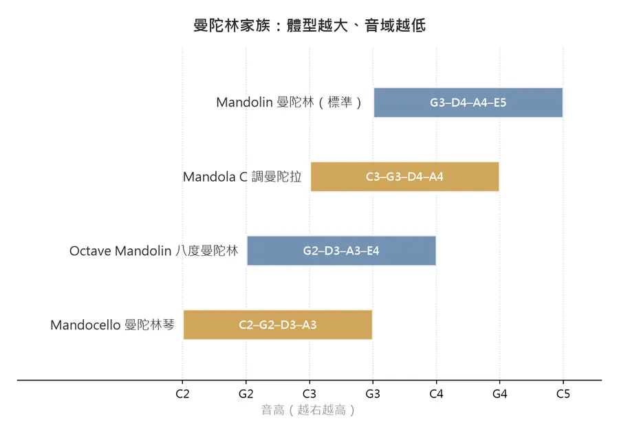
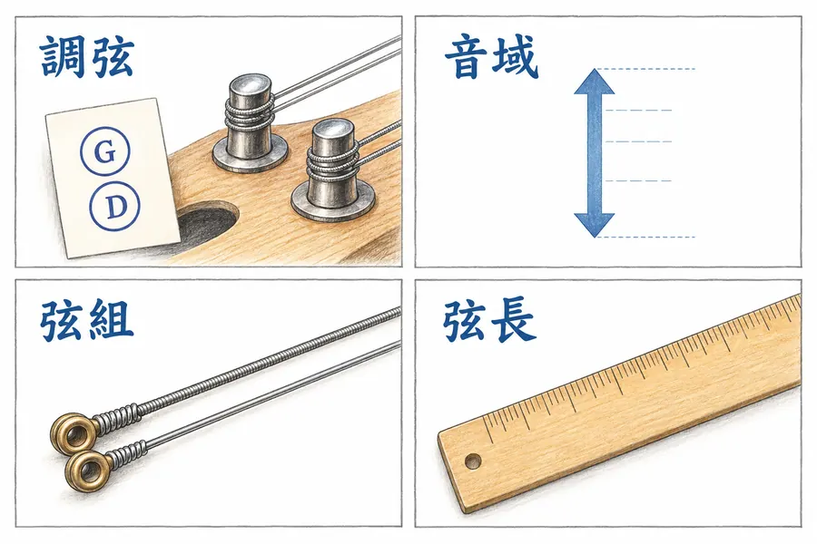
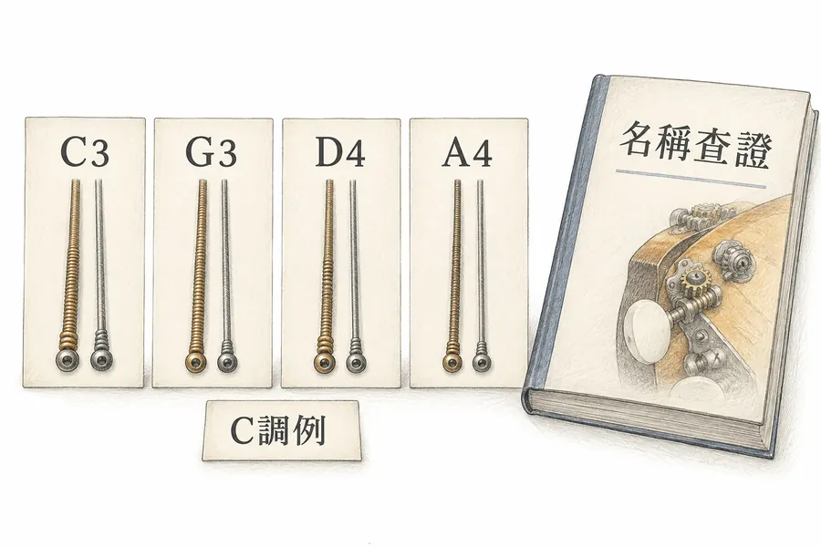
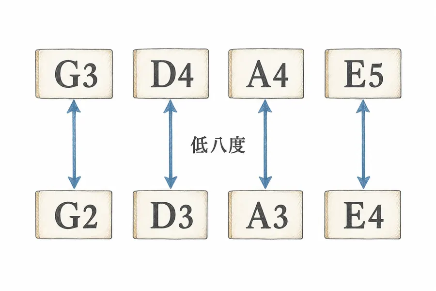
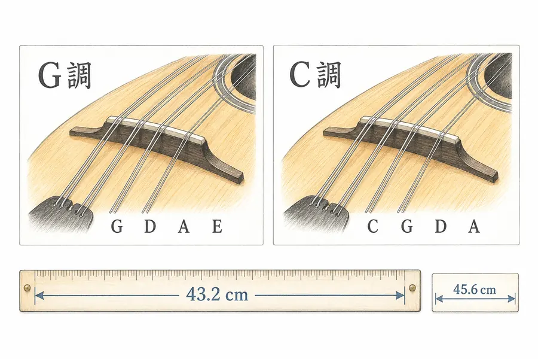
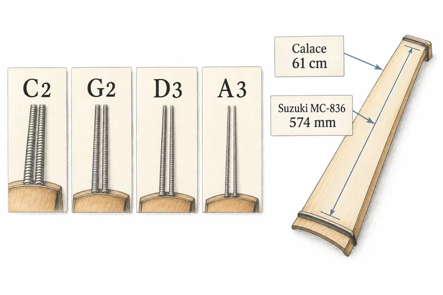
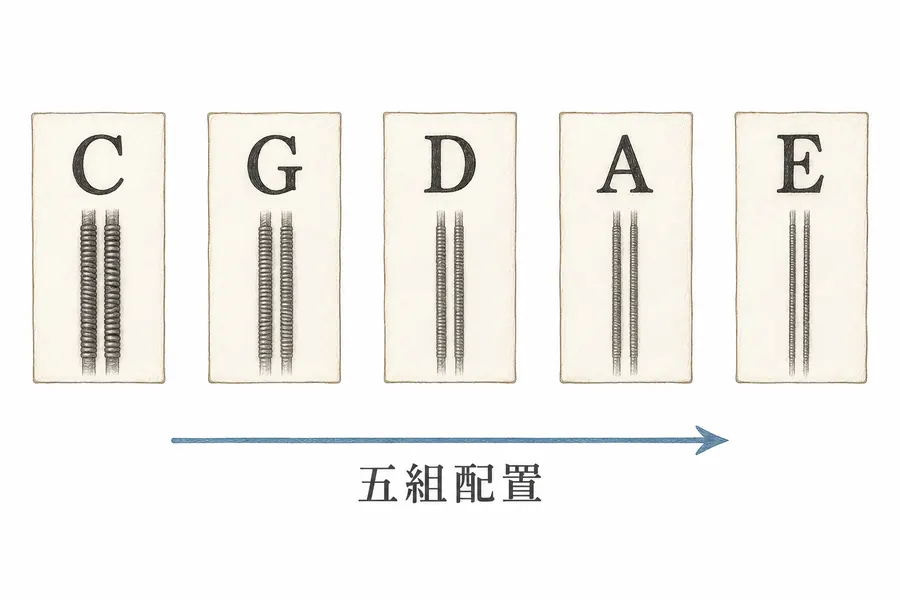
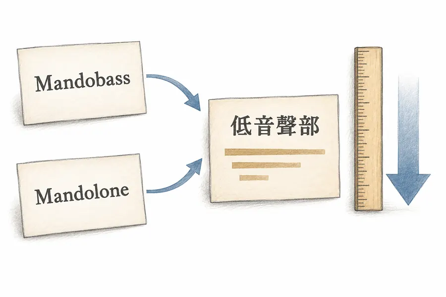
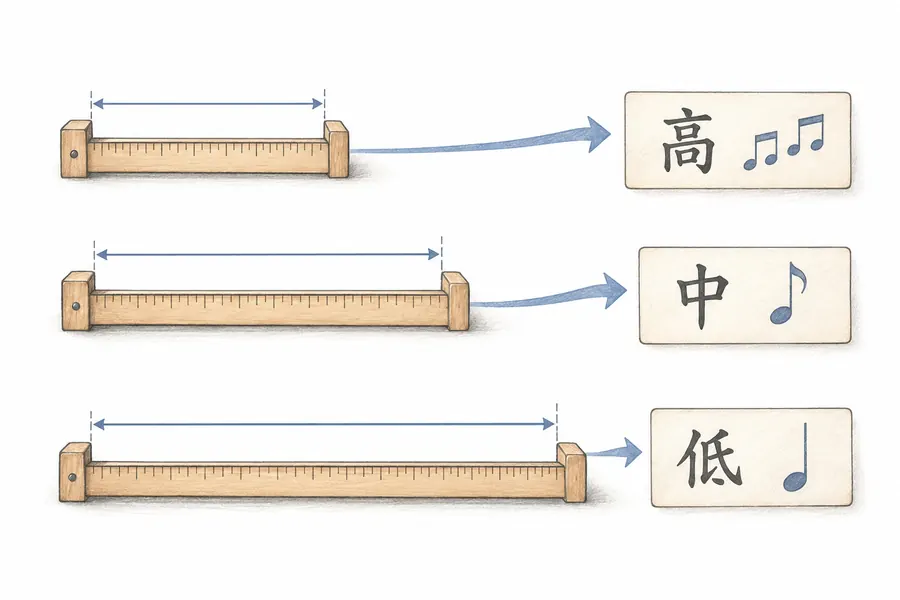
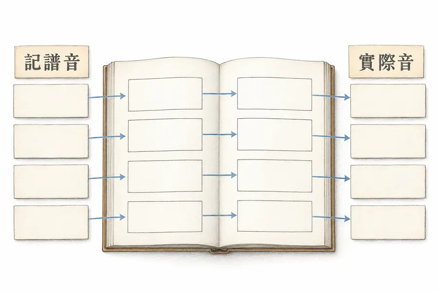

第 5 章・12,790 字
樂器從高音一路往中音、男中音、低音擴張時，最自然的做法，是像小提琴家族那樣排成一列：mandolin、mandola、mandocello、mandobass。
但曼陀林家族比這麻煩得多。
同一個名字，在不同國家可能指向不同的調弦（tuning）。反過來說，同樣是 G–D–A–E 的低八度，也可能被叫成 octave mandolin、mandola in G 或 tenor mandola。
打個比方：這就像「老王」在村裡指三個人。你如果只記住「老王」兩個字，去找人一定找錯。
所以本章把「名稱」放到第二順位。先確認四個事實：
再看它在樂團裡扮演什麼角色。最後，才把各國名稱疊上去。
本章有兩組互補的證據。一是 CMSA（Classical Mandolin Society of America，美國古典曼陀林協會）的記譜指引，它整理了地域命名與記譜。二是 Calace（義大利製琴工坊）的現行產品，它讓我們看到：同一種 mandola 琴體，可以同時提供 G 調與 C 調。〔F13〕〔F15〕

圖 F 曼陀林家族：琴越大、音越低。橫軸是音高，越右邊越高。
先看這張總表。它的欄位順序，就是本章建議的閱讀順序。

圖解 家族分類先看調弦，不先看名稱（示意）
看這張表有個小技巧：先讀中間那一欄。音名是不會騙人的，名字會。
另外注意，音名後面的數字是「第幾個八度」的標記。G3 比 G2 高一個八度，數字越大越高音。
在美國與加拿大，mandola 常指 C3–G3–D4–A4 的四 course 樂器。
它的調弦和 viola（中提琴）完全相同。所以用「曼陀林家族的中提琴」來幫初學者理解，這句話並沒有錯。
但 CMSA 特別提醒：在世界其他地區，同一個調弦可能被叫做 tenor mandola、alto／contralto mandola，或 mandola in C。
更麻煩的是，「mandola」這個字本身，在其他傳統裡也可能指 G–D–A–E 的低八度類型。〔F13〕
這就是地域翻譯最容易出問題的地方。
如果中文只寫「曼陀拉」，不加調弦，讀者很可能以為全世界都在說同一件樂器。實際上不是。
專業寫法最好在第一次出現時，就直接寫成：
讓音高先於名稱。

圖解 5.1 Mandola 的名稱與調弦（示意）
這是本章最重要的一張表。看完它，你就不會再被「mandola」三個字騙。
再看一個更簡化的版本：
【常見誤解】 誤解：「Mandola 就是曼陀林家族的中提琴，全世界都一樣。」 事實：在美國與加拿大，mandola 常指 C 調。但「常」不等於「一定」，而且這個用法到了其他地區就未必成立。「中提琴」這個比喻也只適用於調弦與音域，不能延伸到音色。
換句話說：只寫「曼陀拉」三個字，資訊量等於零。 一定要配上調弦。
功能上，C 調 mandola 確實常填補中音與內聲部。
但它的音色、撥弦的 attack（起音，撥下去那一瞬間的聲音特性）與 sustain（延音，聲音撐多久），跟中提琴完全不同。
所以配器時，不能把中提琴的寫法原封不動搬過來。要依撥弦樂器的起音與延音，重新安排聲部。
曼陀林樂團還要多考慮三件事：
【常見誤解】 誤解：「Mandola 聽起來就像中提琴。」 事實：「像中提琴」最好只用來說明調弦與音域。 mandola 的撥片起音很清楚；複弦在中音區的泛音，以及消音（damping，讓弦停止振動）的做法，也都和弓弦樂器不同。 整份中提琴分譜直接搬過去，長音與內聲部可能需要重新分配tremolo（顫音）或和弦。
另外還有一層：同一個 C3–G3–D4–A4 系統，在不同地區可能使用不同的譜號（clef） 與記譜方式。
CMSA 特別整理了 universal notation（實音記譜）與 transposed notation（移調記譜）兩種做法。這正好說明：調弦相同，不代表樂譜閱讀習慣全球統一。〔F13〕
G2–D3–A3–E4，也就是標準曼陀林低一個八度，是現代最常見的中低音系統之一。
在英美 folk／Celtic（民謠／凱爾特音樂）市場，它很常被叫做 octave mandolin（八度曼陀林）。
在義大利與部分歐洲傳統，同樣的音域可能叫 mandola in G（G 調曼陀拉）。
CMSA 把「rest of the world mandola／octave mandolin」獨立列成一項，就是因為這個名稱差異已經深入實務。〔F13〕
這裡可以借用合唱團的概念。合唱團有女高音、女低音、男高音、男低音四個聲部。曼陀林家族也在做同一件事，只是用撥弦樂器排出一條音域階梯。
不同製琴師可以選用不同的 scale length（弦長，決定按弦距離的那段有效長度）。這是在兩件事之間取捨：

圖解 5.2 Octave Mandolin 與 G 調 Mandola（示意）
想像一條橡皮筋：同一條橡皮筋，拉得越長，要調到同一個音，就得拉得越緊。弦也是一樣。
所以比較 octave mandolin 時，「琴身總長」的價值反而不如弦長。
琴身大可以增加腔體容積（琴肚裡裝空氣的空間），但真正決定按弦距離的是有效弦長。
這也是家族樂器規格表一定要單獨列出 scale 的原因。
Octave mandolin 在 Celtic／folk 世界，常用單音、drone（持續低音，像風笛一直響著的那個音）與空弦共鳴。
這種使用情境，和古典樂團裡的 G mandola 並不完全一樣。
即使調弦一樣，琴體深度、弦長與弦規的選擇，也可能朝不同手感設計。
所以買琴時，應該先問自己一個問題：「我要的這個 G2，是拿來做什麼的？」
這個問題比品牌名稱有用得多。它是比較的起點。
Calace 現行的 Mandola 24、26、13、15，都列出 43.2 cm 的弦長，並可選 45.6 cm。
同一個型號，可以設定成 G 調或 C 調：
〔F15〕
這個例子非常重要。
因為它證明：「Mandola」在一間義大利現役工坊內部，就已經不是單一調弦的名稱。
所以判讀二手 Calace 時，要核對三件事：型號、年代、實際調弦。最好再確認實際弦長、弦規，以及賣家目前把它調成什麼。

圖解 5.3 Calace Mandola 的命名與規格（示意）
Calace 也提供不同的 ribs（琴肚肋片）與指板等級。例如 25 條 rosewood（玫瑰木）ribs，或 concert 級的 33 條 maple（楓木）fluted ribs（帶溝槽的肋片）。
這些是同一音域家族內的製琴差異。
但它不該被誤解成一條普遍規則：「ribs 越多，等級一定越高」。它們只代表某個特定品牌的產品配置。〔F15〕
【常見誤解】 誤解：「琴肚的肋片越多，琴就越高級。」 事實：肋片數要和曲率、單片寬度、工藝與設計系列一起判讀。25 條或 33 條是 Calace 自己的配置選項，不是全球通用的等級表。
Calace 官方頁面是由高到低列 tuning：E–A–D–G／A–D–G–C。
本書全書統一採低到高：G–D–A–E／C–G–D–A。
閱讀原廠資料時，一定要先確認列弦方向。否則同一組音名，很容易被誤判成不同的 tuning。〔F15〕
這也是資料庫欄位必須有「排列方向規範」的原因。
如果不同品牌有的由高到低、有的由低到高，而整理者只把字串複製進表格，讀者就會看到看似矛盾的資訊。
標準化展示時可以重排，但必須保留原始來源供核對。
Mandocello（曼陀大提琴）或 Mandoloncello，常以 C2–G2–D3–A3 為四個 course。
這個音高對應 cello（大提琴）式的五度排列。
它把曼陀林家族帶到真正的低中音範圍。所以在樂團裡，它可以承擔低旋律、對位，以及厚實的和聲。
CMSA 對 mandocello 的記譜處理也顯示：不同作品可能遇到不同譜號與轉寫習慣。〔F13〕
音高越低，如果弦長仍然很短，弦就必須更重，才能保持可控的手感。
如果拉長弦長，又會增加左手的距離。
所以 mandocello 的設計，通常比標準曼陀林更明顯地呈現一個折衷：人體工學 vs. 低頻效率。
這有點像挑鞋子。鞋底越厚越能吸震，但你的腳就越不容易感覺到地面。

圖解 5.4 Mandocello 與 Mandoloncello（示意）
Calace 現行的 Mandoloncello 是 8 弦、61 cm 弦長，C–G–D–A 四 course。
十弦版本則在這個基礎上增加高 E，形成 C–G–D–A–E 五 course。
這也說明：「Mandoloncello」與「Liuto／10-string 延伸型」之間可能有重疊。分類時，應該以弦組數與調弦確認範圍，不要只看名字。〔F16〕
Mandocello 的左手負擔，不只來自 fret spacing（琴格間距）。
粗弦與 course 阻力也是來源。大型琴若仍使用雙弦 course，按弦時要同時讓兩根弦都穩定接觸琴格。
右手也要穿過更厚的弦組。
所以它的演奏技術雖然屬於同一家族，卻不能把標準曼陀林的細小動作直接按比例放大。
兩者不應直接用長短判定優劣，而應連同琴體、弦組與用途一起比較。〔F16〕〔F26〕
Liuto Cantabile（抒情魯特琴）在名稱上最容易誤導中文讀者。
這裡的 liuto 並不表示它等同文藝復興時期的 lute（魯特琴，一種更早的撥弦樂器）。
在 Calace 的傳統裡，它是一件和 mandoloncello 系統密切相關的五 course 撥弦樂器，常見調弦是 C–G–D–A–E。
多出來的高 E，讓大型琴體在保留低音範圍的同時，也能延伸到更高的旋律位置。〔F16〕
打個比方：四 course 的琴像一棟四層樓，五 course 等於加蓋了一層頂樓。地基（低音）沒變，但可用的空間變多了。
這就是為什麼家族資料庫必須同時列出 course 數、弦數與 tuning。三個欄位少一個，就會說不清楚。

圖解 5.5 Liuto Cantabile 的五組複弦（示意）
標準四 course 已經能完整形成大量四音和弦。
但第五 course 讓低音與高音之間的跨度變大。某些 chord melody（和弦旋律，把旋律藏在和弦最上層的彈法）可以把 melody 留在高 E，同時保留低 C／G 的基礎。
這是「結構直接擴張編曲可能性」的例子。
不過多一個 course，也讓消音（muting） 變得更重要。
沒有被使用的弦組，可能產生 sympathetic ring（交感共振，別條弦跟著震動發出聲音）。在大型共鳴琴體上，這種現象更明顯。
演奏者需要用左右手一起控制殘響。這些「多出來的工作」，往往不會出現在單純的規格表裡。
【常見誤解】 誤解：「Liuto Cantabile 是每個曼陀林樂團的標準編制。」 事實：它可以在編曲上連接 mandocello 的低音與 mandolin 的高音，但不是每個樂團的標準成員。用不用，取決於地區、曲目與樂團傳統。
十九世紀末與二十世紀初，大型 mandolin orchestra 追求完整音域時，低音家族的出現非常合理。
理由是音色的一致性：如果高、中、低聲部都由相近的撥弦起音構成，整個樂團會有一致的音色輪廓。
CMSA 的文件至今仍列出 mando-bass，證明這個家族角色不是後人想像出來的。〔F13〕
但大型低音撥弦樂器面臨很現實的成本：
當樂團編制改變，專用 mandobass 的需求自然縮小。

圖解 5.6 Mandobass 與 Mandolone（示意）
歷史型號少見，不代表設計失敗。
它們只是服務於一種曾經非常活躍的 orchestra ecology（樂團生態）。收藏與研究時，應該先問：「當時的樂團是怎麼編制的？」
依當時的編制，去理解低音家族的用途。
Mandobass 的歷史也提醒我們：家族樂器能不能存續，和替代方案有關。
當 double bass 已經有成熟的演奏者與曲目，樂團要新增一件專用低音曼陀林，就必須證明它值得那個成本。
它得在音色一致性或移動性上，拿出足夠的理由。
不同時代，對這個問題的答案會不同。
【常見誤解】 誤解：「低音家族在收藏市場很稀有，所以音樂上比較高級。」 事實：稀少可能來自產量低、用途專門、存放困難，或需求下降。 估價要另看製作者、原裝性、歷史來源與保存狀況。稀有度和音樂價值是兩件事。
把幾個實際數字排在一起，方向就很清楚了：
從 33.5 cm 到 61 cm，可以看到家族向低音延伸時，弦長逐步增加。
這個做法的重點，是讓較低的音高在合理弦規下，仍能維持足夠的張力與反應。〔F14〕〔F15〕〔F16〕
弦的張力，和三個東西互相牽動：
實際製琴不需要演奏者每天計算公式，但比較不同家族時，理解這個關係很有用。

圖解 5.7 家族的常見聲部分工；實際音高依調弦與琴弦配置（示意）
日本 Suzuki（鈴木小提琴製造）2017 年的型錄，提供了另一組很直觀的家族數字：
即使品牌、琴體材料與結構都不同，這組數字仍清楚呈現同一個方向：家族音域降低時，弦長增長。〔F26〕
把 Suzuki 與 Calace 的數字並列，可以看到「家族越低，弦長通常越長」的共同方向。
但兩個品牌的各級距並不完全相同。
這正是跨品牌比較時，應該先確認弦長、調弦與音域的原因。
MD、MC 這些字母本身，只在特定品牌內部有意義。〔F14〕〔F15〕〔F16〕〔F26〕
對演奏者而言，弦長變化還會影響持琴時的撥片位置感。
弦越長，琴橋與右手的相對位置越遠，手臂與手腕的落點可能不同。
大型家族常需要重新調整 strap（背帶）與坐姿，讓持琴方式配合尺寸和重量。
樂器名稱之所以會變得混亂，有一部分原因來自記譜習慣。
某些家族以實音記譜（紙上寫的音，就是實際聽到的音）。
有些歷史或地區資料，則採移調記譜（紙上寫的音和實際音差一段），方便演奏者沿用相同的指法。
CMSA 的文件整理了 mandolin、mandola、octave mandolin、mandocello、Liuto Cantabile 與 mando-bass 可能遇到的譜號與轉調方式。這是實務演奏者非常重要的參考。〔F13〕
打個比方：移調記譜像是「用同一張地圖，但地圖比例不同」。你手指的位置很好用，可是你必須記得換算實際距離。

圖解 5.8 記譜音與實際音高（示意）
兩件樂器若實音重疊，但 attack、弦長與共鳴不同，在樂團裡的穿透力也不同。
實際配器時會遇到這些狀況：
所以真正完整的家族表，不應該只有「中文名／英文名」。
至少要同時列出：tuning、course、scale、實音範圍、常見譜號、樂團功能。
這也是第 20 章的型號資料庫採多欄位、一起確認家族與結構的原因。
移調記譜的目的，往往是讓演奏者沿用熟悉的指法。
但代價是：讀總譜的人必須清楚實音。
編曲者如果只依紙上音符判斷音域，可能把 mandola 寫到不理想的 register（音區）。
這也是專業總譜應該在樂器名稱旁清楚標註 tuning 的理由。〔F13〕
家族分類因此同時是製琴問題、演奏問題與記譜問題。
單獨從任何一邊出發，都容易失真：
完整的資料表，必須把這些視角接起來。
學習檢查：作答、核對、複習
先自己作答，再看答案。答錯時回到本章相關小節重新讀一次。
1. 判斷 Mandola 類樂器時，最重要的資料是？
2. Octave Mandolin 常見的 G 調系統，通常比標準曼陀林？
3. Liuto Cantabile 常見特色之一是？
答案：1.B 2.B 3.A
查證來源：找原文、核條件、留紀錄
〔F13〕Robert A. Margo / Classical Mandolin Society of America，Music Notation for Mandolin Family Instruments，v3, 2019。 家族調弦、記譜與 Mandola／Octave Mandolin 等地域名稱差異。
https://classicalmandolinsociety.org/wp-content/uploads/Music_Notation_for_Mandolin_Family_Instruments_v3.pdf
〔F14〕Liuteria Calace，Mandolini – official specifications，accessed 2026-10-06。 33.5 cm 弦長、圓背 ribs、雲杉面板等現行曼陀林規格。
https://www.calace.it/en/mandolini
〔F15〕Liuteria Calace，Mandole – official specifications，accessed 2026-10-06。 43.2 cm／45.6 cm 弦長、G 調與 C 調 mandola 並存等案例。
https://calace.it/en/mandole
〔F16〕Liuteria Calace，Mandoloncelli & Liuti – official specifications，accessed 2026-10-06。 61 cm 八弦 Mandoloncello 與十弦 C–G–D–A–E 延伸型案例。
https://calace.it/en-mandoloncelli-liuti
〔F26〕鈴木バイオリン製造 / Suzuki Music，2017 string-instrument catalog，2017。 M-30、M-100、MD-4、MD-10、MC-836 等日本家族規格與弦長。
https://www.suzuki-music.co.jp/app/uploads/2017catalog14.pdf